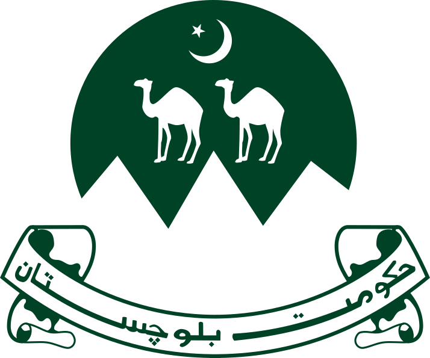
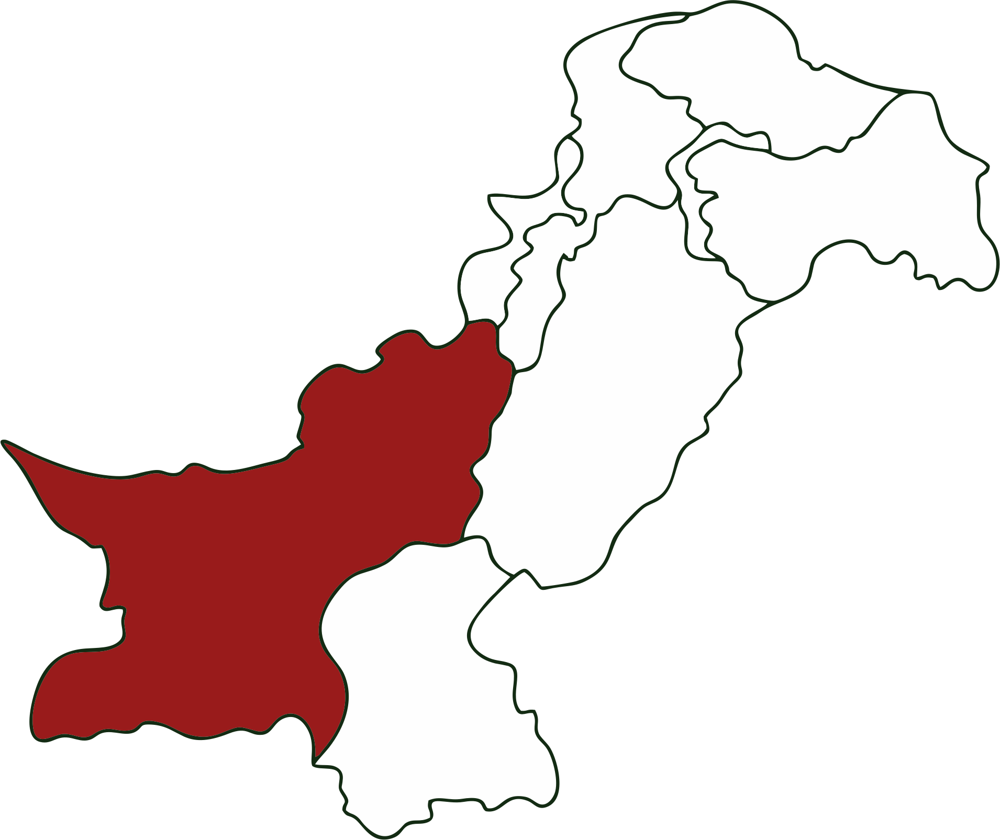

Flag

Emblem
Location

Overview
Rugged Beauty
Balochistan is the largest province of Pakistan by area, covering 44% of the country's landmass. It is a land of stark contrasts, with dry rugged mountains, vast deserts, and a beautiful coastline along the Arabian Sea.
Rich in natural resources like natural gas, copper, and gold, it holds immense strategic importance due to the deep-sea port of Gwadar, a key node in international trade.